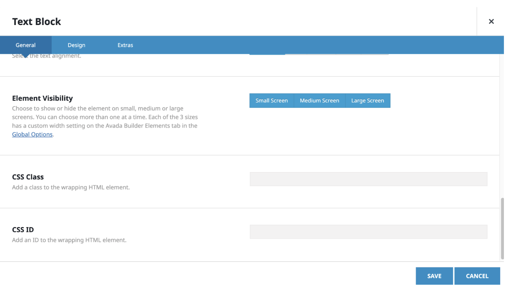
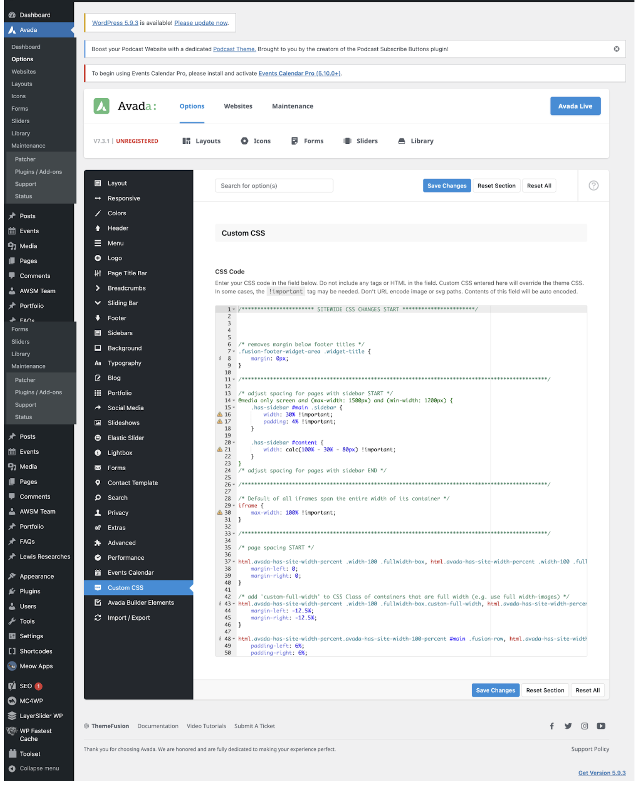
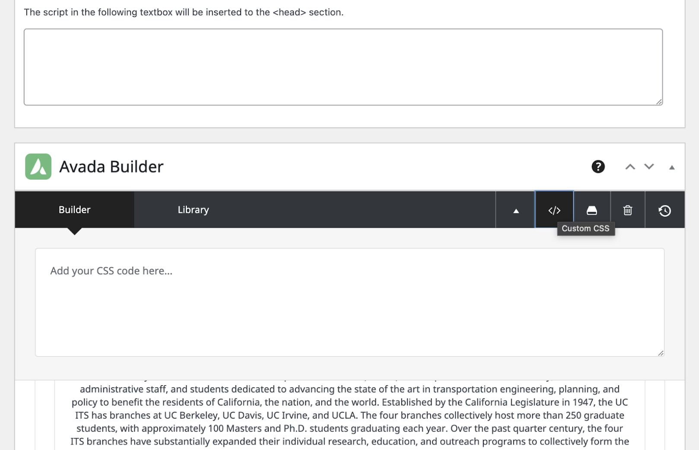
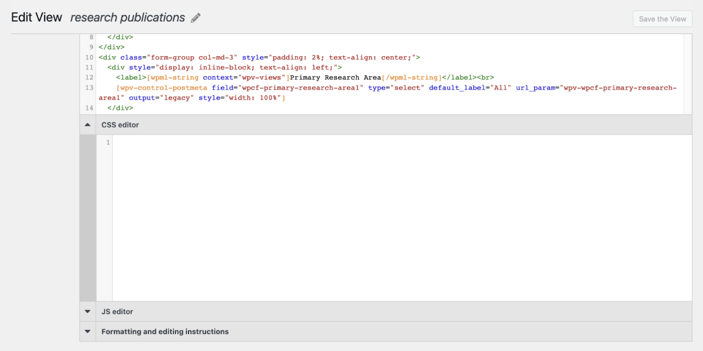

UCITS Website
The University of California Institute of Transportation Studies (UC ITS) is a network of faculty, research and administrative staff, and students dedicated to advancing the state of the art in transportation engineering, planning, and policy for the people of California. Established by the Legislature in 1947, UC ITS has branches at UC Berkeley, UC Davis, UC Irvine, and UCLA.

What made this possible:
The site is based on WordPress
My job:
I helped with creating the documentation of the UCITS Website explaining step by step about how to create, modify and add new information to the website.
I worte the custom CSS for some of the pages
How to Apply Site-wide Custom CSS Codes
There are various places where custom CSS has been used. A lot of the CSS comes from Wordpress and Avada but occasionally we do add our own CSS.
Since we are using the avada theme pack, and pretty much all Avada elements can have a CSS name or ID assigned to them:

• If you do decide to assign a class and id to an element, please be mindful of what name you choose to ensure it isn’t already being used by Wordpress or Avada or any other plugin
• Tips: you can prepend the class or id name with a unique word that is unlikely to be used elsewhere.
To prevent too much custom CSS from overriding each other, check these places first to see if you can edit an existing custom CSS first before adding more:

• The CSS code placed here applies site-wide
How to edit CSS on single page:

• For each respective page, there is a way to add CSS code that applies only to said page
• Click the "angle brackets" button to bring up this CSS panel
Toolset Views and Content Template:

• For the older Toolset Views and Content Templates that aren’t using Avada Builder, CSS code may be inserted here
• For the new Views and Templates that are using Avada Builder, any custom CSS code can be in the previously mentioned location (same as ‘Edit Page’ section)